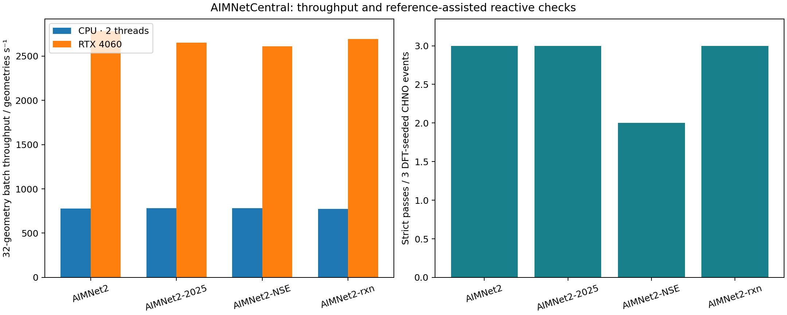

Benchmark & literature alignment
现在应该比较什么？
当前目标是检验符号信息能否提高“反应物 → 经过验证的物理事件”的搜索效率，并最终建立可学习的双向配对。产品预测准确率、TS 成功率和网络覆盖率分别回答不同问题。
本页没有原模型排行榜。本机尚未运行 FlowER 或 ReactionAtlas 的完整原始模型。文献案例测试使用本项目的 AIMNet2-rxn 与搜索流程；人工动作规则不标成 FlowER 预测。
三项工作的定位与差距
| 维度 | 本项目当前状态 | FlowER | ReactionAtlas |
|---|---|---|---|
| 核心输出 | 符号提议对应的三维 TS 与实际端点 | BE 矩阵变化、图步骤与多步机理序列 | 三维 TS、极小值与扩展反应网络 |
| 提议模型 | 公开局部模板＋人为电子动作规则＋几何拟合；未训练神经提议模型 | 学习的电子重分布生成模型 | MoreRed 三维提议＋MD/P-RFO 探索 |
| 物理证据 | 逐事件 MLIP 力/曲率/双侧下降；少量完整 DFT/IRC | 主要为符号与产品评测，可接下游量化计算；图步骤不自动等于物理基元事件 | 大规模 MLFF 搜索及独立 DFT 评估；生成筛选并非每条都采用完整 DFT/IRC |
| 作用范围 | 中性闭壳层 CHNO；小分子与有限双分子相遇 | 更广的合成反应、试剂、离子与符号空间 | 小糖网络、离子/缓冲物种及多种反应计量关系 |
| 规模与泛化 | 小规模工程验证；未做独立家族留出泛化评测 | 百万级图步骤训练与系统预测评测 | 万级物种与反应网络探索 |
| 持续扩展 | 固定库存内探索；相遇盆地尚需桥接；模型权重未更新 | 符号机理搜索；不是三维反应网络引擎 | 新物种回到探索与动力学采样闭环 |
| 逆向机理学习 | 有轨道解释原型，但独立箭头金标准为零 | 并非已验证 TS/路径到箭头的逆向模型 | 并非电子箭头配对与双向表示学习数据集 |
来源：FlowER 正式论文、官方代码及版本说明、ReactionAtlas v1 论文与方法。正式论文、预印本和后续仓库版本不能混为同一 benchmark。
本项目的 benchmark 分层
| 问题 | 应该统计 | 当前阶段 |
|---|---|---|
| 符号提议覆盖 | 适用动作数、守恒/价态通过率；不支持的输入计入审计 | 已有模板与规则覆盖检查 |
| 符号 → 物理事件 | 同输入、同预算下的目标端点命中、不同有效事件数、DFT 保留率 | 本轮重点；几何/净变键/完整箭头对照 |
| 搜索效率 | 包含失败的几何评估、首个有效事件成本；墙钟标明 CPU/GPU | 已有；不可直接与论文只统计成功任务的 GPU 时间比较 |
| 网络持续增长 | 真实盆地连通路径、新物种续探；与物种层图分开 | MLIP 小规模证据；完整 DFT 多步链未完成 |
| 物理事件 → 符号机理 | 独立箭头标注、等价箭头集合、电子结构一致性 | 金标准不足，暂不报告准确率 |
| 物理反馈学习 | 冻结测试集上的前后提升、DFT 成本与未见家族表现 | 保存反馈，尚未完成模型更新与前瞻评测 |
作者案例的来源与适用性
“论文示例”“被纳入公开测试集”“逐例预测成功”和“DFT/IRC 验证”是不同证据。下表逐条说明，不把简化体系称为完整复现。
| 案例 | 作者依据 | 本轮处理 | 关键限制 |
|---|---|---|---|
FlowER 环氧乙烷＋氨C1CO1.N | Fig. 1b, PDF page 4 论文表示示例；无单例 DFT 认证 | 进入相同预算测试 | 目标图只用于事后评分；无参考 TS / 产物几何输入 |
ReactionAtlas 羟基乙醛水合O=CCO.O | S2.3.4, glycolaldehyde gem-diol discussion 论文报告同一反应的气相 DFT 能垒 | 进入相同预算测试 | 目标图只用于事后评分；无参考 TS / 产物几何输入 |
ReactionAtlas 甲醛二聚C=O.C=O | S2.3.4, formose initiation 同一端点对，但作者报告的是另一条 TS 通路 | 进入相同预算测试 | 目标图只用于事后评分；无参考 TS / 产物几何输入 |
FlowER 测试集：环庚三烯正离子＋氰根[C-]#N.c1ccc[cH+]cc1 | flower_dataset/test.txt line 161152 原始测试记录；逐例预测成功未知 | 准备阶段受阻，保留记录 | Open-shell Lewis graph outside this pilot |
| FlowER 十步合成展示 | 官方 beam.txt；论文 Fig. 3 / 扩展数据 | 当前未执行 | 完整体系含 Br、F、Cl 和多组分，超出本机势能范围。保留原反应，未删去原子。 |
查看完整的 FlowER 展示反应
O.Cl.[OH3+].CC(=O)CC(=O)C(F)(F)F.NNc1cccc(Br)c1>>Cc1cc(n(n1)-c1cccc(c1)Br)C(F)(F)F|Cc1cc(nn1-c1cc(ccc1)Br)C(F)(F)F
环氧乙烷—氨是 FlowER 的表示示例，不是作者对该单例做过 DFT 的证明。筛选到的原始测试记录没有公开的逐例预测成功信息。此次环氧开环动作属于人为规则扩展，不能声称零样本学习。
本轮实际测试
| 案例 | 策略 | 目标命中 / 计划取向 | 尝试 | 几何评估 |
|---|---|---|---|---|
| FlowER 环氧乙烷＋氨 | 纯几何 | 0 / 2 | 14 | 18000 |
| FlowER 环氧乙烷＋氨 | 净变键 | 0 / 2 | 16 | 18000 |
| FlowER 环氧乙烷＋氨 | 完整箭头 | 0 / 2 | 17 | 18000 |
| ReactionAtlas 羟基乙醛水合 | 纯几何 | 0 / 2 | 15 | 18000 |
| ReactionAtlas 羟基乙醛水合 | 净变键 | 2 / 2 | 14 | 18000 |
| ReactionAtlas 羟基乙醛水合 | 完整箭头 | 1 / 2 | 14 | 18000 |
| ReactionAtlas 甲醛二聚 | 纯几何 | 0 / 2 | 15 | 18000 |
| ReactionAtlas 甲醛二聚 | 净变键 | 0 / 2 | 17 | 18000 |
| ReactionAtlas 甲醛二聚 | 完整箭头 | 0 / 2 | 16 | 18000 |
新结果均为 MLIP 证据；本轮没有新跑完整 DFT。历史上甲醛二聚的 DFT 复核另列在事件库。
AIMNetCentral 广元素势：实际速度与选择
建议：广元素闭壳层探索用 aimnet2-2025；更高参考层级用 aimnet2；自由基/开壳层分支才使用 aimnet2-nse；历史 CHNO 对照继续固定原来的 aimnet2-rxn。

| 模型 | 元素 | CPU 单点/ms | CPU batch32/s | GPU 单点/ms | GPU batch32/s | CHNO 严格通过 | Cl SN2 |
|---|---|---|---|---|---|---|---|
| AIMNet2 | 14 | 8.66 | 779 | 11.22 | 2782 | 3/3 | True |
| AIMNet2-2025 | 14 | 8.14 | 781 | 12.26 | 2653 | 3/3 | True |
| AIMNet2-NSE | 14 | 8.67 | 781 | 10.61 | 2609 | 2/3 | True |
| AIMNet2-rxn | 4 | 8.33 | 772 | 13.84 | 2693 | 3/3 | 元素不支持 |
GPU 单构型在本轮 11 原子体系上慢于 CPU；GPU 优势来自 batch32 与有限差分 Hessian。反应区检查使用 DFT TS/负模或官方 SN2 TS 猜测，属于参考辅助，不是自主发现。
AIMNet2-2025：沿正式算法扩展反应路径
继续使用 v1–v6 的事件登记定义：A 产生符号引导 seed，实际下降得到的 B–TS–C 直接登记；是否包含 A 仅作为来源关系。arrows 表示完整箭头引导的三维 seed。
53验证后 TS 边
35端点图对
8文献相关图对
292,962几何评估
新边为 AIMNet2-2025 一阶鞍点和双侧下降证据；尚未追加 DFT/IRC。高能分解、替代端点和同图多 TS 均保留。
下一步的优先级
- 先补可比性与标注。冻结输入库存、方法、预算和目标定义，保留支持范围之外的案例。
- 改进提议与几何。Coley 3217 的参考 TS 对照已表明存在可保留的环化通路，自主 seed 尚未命中。
- 处理相遇盆地与多组分。不同相遇极小值可以分别探索；物种层汇总不能伪造三维盆地连接。
- 建立独立电子解释标签后再训练双向模型。物理通过不等于唯一箭头正确。
同为“甲醛二聚→羟基乙醛”，我们的高能 TS 与 ReactionAtlas 报告的另一条通路也不能视为相同结果。量化方法、参照态和具体路径需同时匹配。